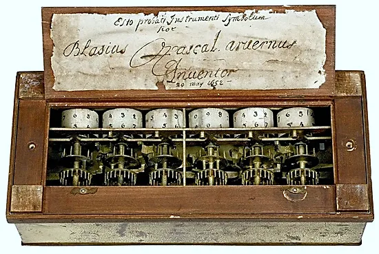
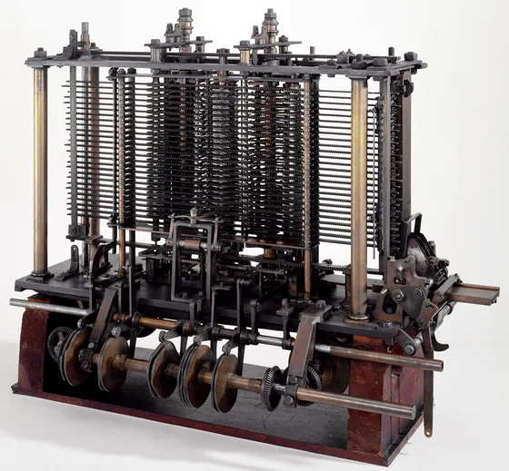
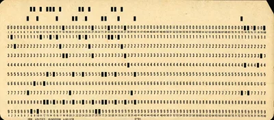

Programlama ve hesaplamaBilgisayar bilimiBilgisayarın tarihiTuring makineleriBilgisayarların sınırlarıBildirimsel ve buyurusal bilgiAlgoritma ve sözde kodSıralı, koşullu, döngülü işlemler
Sercan KÜLCÜ · Giresun Üniversitesi · Elektrik-Elektronik Mühendisliği
Giriş
Öğrenme Çıktıları
Temel kavramlar
Programlama, hesaplama ve bilgisayar bilimini tanımlamak; bilgisayar biliminin teknolojiden ibaret olmadığını açıklamak.
Tarihsel gelişim
Sabit ve depolanan programlı bilgisayarı ayırt etmek; Babbage, Lovelace, ABC, Colossus, ENIAC, EDVAC ve von Neumann mimarisini tanımak.
Turing makinesi
Bant, bant başlığı ve kuralları kullanarak basit bir Turing makinesini adım adım çalıştırmak.
Bilgi türleri
Bildirimsel (ne?) ve buyurusal (nasıl?) bilgiyi karekök ve EBOB örnekleriyle ayırt etmek.
Algoritma ve sözde kod
Bir problemin girdi ve çıktısını belirlemek; çözümü numaralı adımlarla sözde kod olarak yazmak.
İşlem türleri
Sıralı, koşullu ve döngülü işlemleri tanımak; küçük Java programlarına çevirip çıktılarını izlemek.
Programlama ve Hesaplama
Programlama (Programming)
Programlama, bilgisayara talimat vermenin bir yoludur.
Programlanan bilgisayar karmaşık görevleri yerine getirebilir.
Programlama dilleri (Java, Python, C…) bilgisayarla iletişim kurmamızı sağlayan araçlardır.
Programlama öğrenmek problem çözme ve düşünme becerilerini geliştirir.
Bilgisayarlar artık her yerde
Evden iş yerine, eğlenceden eğitime her alanda kullanılır.
Akıllı telefon, tablet, dizüstü bilgisayar, ev aletleri, arabalar…
İnternet sayesinde dünya “bir tık” uzaklıkta: alışveriş, haber, iletişim, eğitim dijital dünyada.
Benzetme: Bilgisayar çok hızlı ama hiçbir şeyi kendiliğinden bilmeyen bir yardımcıdır. Program, ona ne yapacağını adım adım anlatan yazılı talimat listesidir.
Programlama ve Hesaplama
Programlamanın Rolü
Programlama, bilgisayarların istediğimiz görevleri yerine getirmesi için kullanılan bir araçtır.
Programcılar, bilgisayarları hayatımızın her alanında daha kullanışlı ve verimli hâle getirir.
OtomasyonAkıllı termostatlar, aydınlatma ve güvenlik sistemleri; fabrikalardaki robotlar.
SağlıkTıbbi cihazlar (ör. kalp pili, MR), hastane bilgi sistemleri, randevu sistemleri.
EğitimÇevrim içi ders platformları, öğretim yazılımları, sınav ve not sistemleri.
Elektrik-elektronik mühendisliğinde de gömülü sistemler, sinyal işleme ve kontrol yazılımları hep programlamayla yapılır.
Programlama ve Hesaplama
Hesaplama (Computation)
Bilgisayarların temel işlevidir.
Bir bilgisayarın ya da hesaplama cihazının bir görevi gerçekleştirmek için verileri işleme sürecidir.
Matematiksel işlemleri, mantıksal kararları ve veri işlemeyi içerir.
Programlama, hesaplamayı daha etkili ve verimli hâle getirir.
Veri analiziÖlçümlerden ortalama, eğilim, grafik.
SimülasyonBir devrenin ya da hava durumunun modeli.
Oyun geliştirmeFizik, çarpışma, yapay zekâ… ve daha fazlası.
Programlama ve Hesaplama
Hesaplamanın Yapı Taşları
MatematikToplama, çıkarma, çarpma, bölme gibi işlemler.
MantıkKararlar, mantıksal ifadeler değerlendirilerek alınır: “Eğer hava güneşliyse dışarı çık.”
Hesaplama veriyi alır, işler ve bir sonuç üretir. Sonuç; problem çözmek, veri analiz etmek ya da görevleri otomatikleştirmek için kullanılır. Programlama, bilgisayara hesaplamayı nasıl yapacağını anlatır.
publicclass Hesaplama {
publicstaticvoid main(String[] args) {
int a = 7, b = 3;
int toplam = a + b; // matematikint carpim = a * b; // matematikboolean gunesli = true; // mantık
System.out.println("Toplam: " + toplam);
System.out.println("Çarpım: " + carpim);
if (gunesli) { // karar
System.out.println("Dışarı çık");
}
}
}
Çıktı
Toplam: 10
Çarpım: 21
Dışarı çık
Bilgisayar Bilimi
Bilgisayar Bilimi Sadece Teknoloji Öğrenmek Değildir
Bilgisayar bilimi (computer science) yalnızca bilgisayarlarla ilgili teknik bilgi değil, aynı zamanda problem çözme becerileriyle ilgili bir disiplindir.
Bilginin nasıl işlendiğini, depolandığını ve iletildiğini derinlemesine anlamayı gerektirir.
Teknolojiyle sınırlı değildir: teknoloji yalnızca bir araçtır. Temel amaç sorunları çözmek ve bilgiyi daha iyi anlamaktır.
Karmaşık problemleri tanımlama, analiz etme ve etkili çözümler üretme yeteneğini geliştirir.
Benzetme: Astronomi teleskoplarla ilgili olduğu kadar, bilgisayar bilimi de bilgisayarlarla ilgilidir. Teleskop gökyüzünü incelemenin aracıdır; bilgisayar da problem çözmenin.
Bilgisayar Bilimi
Bilgisayar Bilimi: Üç Dayanak
Bilgisayar bilimi mantık, problem çözme ve yaratıcılığa dayalı bir disiplindir.
MantıkVerileri değerlendirip doğru sonuçlar çıkarma yeteneğidir. Program yazma sürecinin temelini oluşturur.
Problem çözmeKarmaşık problemleri tanımlama ve çözme. Her problem, mantıklı bir adım sırasıyla çözülür.
YaratıcılıkYeni ve yenilikçi çözümlerin doğmasını sağlar; aynı problemin birçok farklı çözümü olabilir.
Programlama yaptıkça bu üç beceri birlikte gelişir.
Bilgisayar Bilimi
Teknoloji ile Sosyal Sorumluluk
Bilgisayar bilimi, teknolojinin insanlara nasıl yardımcı olabileceğini ve toplumsal sorunların çözümüne nasıl katkı sağlayabileceğini düşünmeyi teşvik eder.
Dünyayı daha iyi anlamamıza ve geliştirmemize yardımcı olur; teknolojiyi insanlığın hizmetine sunma sorumluluğunu vurgular.
Yalnızca teknolojiyle ilgilenenler için değil, problem çözme ve düşünme becerilerini geliştirmek isteyen herkes için ilginç bir alandır.
Uygulama alanlarından bazıları:
TıpEkonomiAstronomiBiyolojiEnerjiUlaşımAfet yönetimi
Yazdığımız programlar gerçek insanları etkiler: bir hastane yazılımındaki hata ya da kişisel verilerin korunmaması ciddi sonuçlar doğurabilir.
Bilgisayar Bilimi
Bilgisayar Biliminde Neler Var?
Bilgisayar bilimi, gerçekliği anlama, modelleme ve analiz etme amacı güden bir bilim dalıdır.
Problemleri çözmek için algoritmalar ve kod kullanılır.
Soyutlama (abstraction)Karmaşık bir sistemin gereksiz ayrıntılarını gizleyip özünü bırakmak. Metro haritası sokakları değil, yalnızca durakları ve hatları gösterir.
Problem çözmeProblemi parçalara ayırmak, her parçayı adım adım çözmek ve çözümleri birleştirmek.
Sanat ve tasarımMantık ve analitik düşünceyle sınırlı değildir: dijital medya, elektronik müzik, oyunlar, animasyon…
Bilgisayarın Tarihi
Bilgisayar (Computer)
Bir dizi hesaplama ve talimatı yürüten cihazdır; bu talimatlar bilgisayarın bir görevi yerine getirmesini sağlar.
Verileri işlemek için matematiksel hesaplamalar ve mantıksal talimatlar kullanır.
Günümüz bilgisayarları elektronik devrelerle çalışır ve sayıları dijital olarak temsil eder.
İşlemci (CPU)Talimatları yürütür, hesaplar.
Bellek (RAM)Çalışan program ve verisi; elektrik kesilince silinir.
DepolamaDisk, SSD: kalıcı saklama.
Giriş/ÇıkışKlavye, fare, ekran, yazıcı, ağ.
Bilgisayarın Tarihi
Elektronik ve Dijital
ElektronikBilgisayar, verileri elektrik akımı ile işler; mekanik dişliler yerine transistörler anahtarlama yapar.
Dijital (sayısal)Veriler 0 ve 1 ile temsil edilir. Her 0/1 bir bittir; 8 bit = 1 bayt.
İki düzeyli sinyali gürültüye rağmen ayırt etmek kolaydır: 3,9 V da 4,8 V da “1” sayılır. Dijital sistemlerin güvenilirliği buradan gelir.
Bilgisayarın Tarihi
Sabit Programlı Bilgisayar (Fixed Program Computer)
Belirli bir problemi çözmek için tasarlanır; önceden tanımlanmış tek bir programı çalıştırır. Program, makinenin yapısına gömülüdür.
Sabit programlı makineler bilgisayar biliminin temellerini attı, teknolojik gelişmelere ilham verdi ve modern bilgisayarların öncüsü oldu.

Pascaline: yalnızca toplama ve çıkarma yapabilir.
Bilgisayarın Tarihi
Charles Babbage ve Analitik Makine
Charles Babbage (1791–1871): İngiliz matematikçi ve mucit.
1837’de Analitik Makine’yi (Analytical Engine) tasarladı: ilk genel amaçlı, programlanabilir bilgisayar tasarımı.
Matematiksel hesaplama yapabilen ve sonuçları saklayabilen bir makineydi; farklı hesaplamalar için programlanabilirdi.
Bugünkü bilgisayarın parçaları bu tasarımda vardı: store (bellek), mill (işlemci), delikli kartlarla giriş ve yazıcıyla çıkış.
Delikli kart fikri, desenleri kartlarla belirlenen Jacquard dokuma tezgâhından (1804) alındı.
Makine Babbage’ın yaşamında tamamlanamadı, ama modern bilgisayarların öncüsü kabul edilir.

Analitik Makine’nin deneme modeli (bir parçası).
Bilgisayarın Tarihi
Ada Lovelace: İlk Program
Ada Lovelace (1815–1852): İngiliz matematikçi ve yazar.
1843’te Analitik Makine üzerine bir makaleyi çevirip kendi notlarını ekledi.
“Not G”de makinenin Bernoulli sayılarını hesaplaması için adım adım bir yöntem verdi: bu, ilk bilgisayar programı kabul edilir.
Matematiksel düşünceyi ve programlamayı bilimsel bir yaklaşımla birleştirdi; bilgisayar tarihinin ilk programcısıdır.
ÖngörüsüMakinenin yalnızca sayılarla değil, sembollerle de (ör. müzik notaları) çalışabileceğini ilk fark edenlerdendir.
Mirası1980’de tanıtılan Ada programlama dili onun adını taşır.
Program, makine henüz yokken yazıldı: algoritma kâğıt üzerinde tasarlanabilir. Bu bölümde biz de önce sözde kodla düşünüp sonra Java’ya geçeceğiz.
Bilgisayarın Tarihi
Depolanan Programlı Bilgisayar (Stored Program Computer)
Sabit bir program yerine programlarını belleğinde saklayan makinedir; program ve veri aynı bellekte durur.
Farklı programları çalıştırabilir: daha esnek ve genel amaçlı bilgisayarların temelini attı.
Program da bir veri olduğundan girdi, başka bir makinenin (programın) tanımı olabilir. Evrensel Turing makinesi tam olarak bu tür bir girdiyi işler.
Bilgisayarın Tarihi
Bilgisayarın Kısa Tarihi
Mekanik dönemDişliler ve kartlar: Pascaline, Fark ve Analitik Makine.
Kuramsal temelTuring (1936): “Hesaplanabilir” ne demektir? Evrensel makine fikri.
Elektronik dönemVakum tüplü ABC, Colossus, ENIAC; depolanan programlı EDVAC.
Çizelgedeki aralıklar eşit çizilmiştir; yıllar arasındaki gerçek uzaklığı göstermez.
Bilgisayarın Tarihi
İlk Elektronik Bilgisayarlar: ABC ve Colossus
Atanasoff–Berry Bilgisayarı (ABC)
John Atanasoff ve Clifford Berry, Iowa State Üniversitesi, 1937–1942.
İlk elektronik dijital bilgisayar kabul edilir; mantık devrelerini vakum tüpleriyle kurdu.
Sayıları ikili (0/1) sistemde işledi.
Bellek: dönen tamburlar üzerindeki kondansatörler.
Programlanamazdı: yalnızca doğrusal denklem sistemlerini çözüyordu (sabit programlı).
Colossus Mark 1
Tommy Flowers ve ekibi, Bletchley Park (İngiltere), 1944.
İlk programlanabilir elektronik dijital bilgisayar; anahtar ve fişlerle programlanıyordu.
II. Dünya Savaşı’nda düşmanın şifreli mesajlarını çözdü.
Yaklaşık 1600 vakum tüpü kullandı: mekanik cihazlardan çok daha hızlı ve esnekti.
Bilgisayar teknolojisinin ilerlemesine büyük katkı sağladı.
Bilgisayarın Tarihi
Elektronik Valf: Vakum Tüpü
Havası boşaltılmış cam tüp: ısıtılan katot elektron yayar, anot bu elektronları toplar.
Aradaki ızgaraya uygulanan küçük gerilim akımı açar ya da keser: tüp bir elektronik anahtar gibi çalışır (açık = 1, kapalı = 0).
Hareketli parça olmadığından mekanik rölelerden binlerce kat hızlı anahtarlama yapar.
Sakıncaları: çok ısınır, çok enerji harcar ve sık arızalanır.
1947’de icat edilen transistör aynı anahtarlama işini çok daha küçük, serin ve güvenilir biçimde yapar; bugünkü işlemcilerde milyarlarca transistör vardır.
Bilgisayarın Tarihi
ENIAC ve EDVAC
ENIAC (1946)
John Mauchly ve J. Presper Eckert, Pennsylvania Üniversitesi (ABD).
Genel amaçlı ilk büyük ölçekli elektronik bilgisayar.
Mekanik parçalar yerine yaklaşık 17 500 vakum tüpü: daha hızlı ve güvenilir.
Saniyede yaklaşık 5000 toplama; topçu atış tabloları gibi büyük hesaplar.
Sayıları onlu sistemde tutuyordu; programlamak için kablolar elle yeniden takılıyordu.
EDVAC (1949–1951)
Tasarımı, John von Neumann’ın 1945 raporunda tanımlandı; 1951’de tam olarak çalıştı.
ENIAC’tan farklı olarak ikili sayı sistemini kullandı.
Programı ve veriyi aynı bellekte saklıyordu (depolanan program).
Komutlar sırayla çalışıyor, koşula bağlı atlama yapılabiliyordu.
Bu tasarım, bugünkü bilgisayarların temeli olan von Neumann mimarisidir.
Bilgisayarın Tarihi
Genel Amaçlı Bilgisayar (General Purpose Computer)
Kullanıcının ihtiyacına göre programlanabilir; geniş bir uygulama yelpazesi için tasarlanmıştır.
İş, eğitim, eğlence gibi birçok alanda kullanılır. Program değiştirilerek farklı görevlere uyarlanır: aynı dizüstü bilgisayar bir dakika önce müzik çalar, sonra Java derler.
İşlemci, bellek ve giriş/çıkış birimlerinden oluşur. İşlemci verileri talimatlara göre işler ve sonuç üretir.
Otomasyonİş süreçlerini otomatikleştirir.
BilimBilimsel hesaplamaları hızlandırır.
İletişimİletişimi kolaylaştırır.
Bilgisayarın Tarihi
Von Neumann Mimarisi ve Sistem Yolu
Program ve veri aynı bellekte durur; işlemci komutları bellekten sırayla okur ve çalıştırır. Birimler sistem yolu (bus) denen ortak hatlarla haberleşir.
İlk programlar çoğunlukla matematiksel hesaplamalar içindi; ilk kullanımlar bilimsel ve askerî uygulamalara odaklanıyordu.
Programlar ve veriler delikli kartlarla girilirdi: her sütundaki delik bir karakteri kodlar.
İlk yaygın yüksek seviyeli programlama dili Fortran (Formula Translation), John Backus önderliğinde IBM’de geliştirildi ve 1957’de kullanıma sunuldu.
Fortran bilimsel hesaplamalarda yaygın olarak kullanıldı ve hâlâ kullanılmaktadır.

80 sütunlu delikli kart: bir kart ≈ bir satır program.
Yüksek seviyeli dil, programcının K = I + J gibi matematiğe yakın ifadeler yazmasını sağlar; derleyici bunu makine komutlarına çevirir. Java da (1995) yüksek seviyeli bir dildir.
□ okundu → kural 3: makine durur. Sonuç bantta: 1001.
Bu kural tablosu, makinenin “programı”dır. Evrensel makine böyle bir tabloyu bantta okuyup çalıştırabilir.
Turing Makineleri
Hesaplamanın Sınırlarını Tanımlamak
Turing makinesi, hesaplamanın ne olduğunu ve sınırlarını kesin olarak tanımlar.
Church–Turing tezi: Adım adım bir yöntemle hesaplanabilen her şey bir Turing makinesiyle de hesaplanabilir.
Ama her problem hesaplanabilir değildir. Turing, “Verilen bir program bir gün durur mu?” sorusunu (durma problemi, halting problem) her program için doğru yanıtlayan bir algoritmanın olamayacağını kanıtladı.
Bu sonuçlar 20. yüzyılın en önemli bilimsel sonuçlarından biri kabul edilir.
Java ile bağlantı: Java, Python, C gibi diller Turing-tamdır (Turing complete): bir Turing makinesinin yapabildiği her hesabı yapabilirler. Diller hız ve kolaylık bakımından farklıdır, güç bakımından değil.
Bilgisayarların Sınırları
Bilgisayarların Sınırları
Bilgisayarlar karmaşık hesaplamaları çok hızlı yapar; bu güç teknolojik gelişmelere dayanır. Yine de her kaynak sınırlıdır.
İşlemci hızıHesapların ne kadar hızlı yapılacağını belirler; ancak işlemci hızı sınırlıdır.
BellekVeri saklama kapasitesidir. Daha fazla bellek daha karmaşık görevler demektir; ancak bellek de sınırlıdır.
Veri işleme kapasitesiBüyük veri kümelerini işlemek zaman ve kaynak ister.
EnerjiBilgisayarlar sınırlı bir kaynak olan enerjiyi tüketir; daha güçlü bilgisayar daha fazla enerji demektir.
Programcılar bu sınırları kaynakları etkin kullanarak aşmaya çalışır: aynı işi daha az adımda ve daha az bellekle yapan algoritmalar seçerler.
int 32 bitlik bellek kullanır: en büyük değeri 231 − 1 = 2 147 483 647’dir. Bir eklenince taşma (overflow) olur, en küçük değere döner.
double sayıları ikili tabanda yaklaşık 15–16 basamak duyarlıkla saklar; 0,1 ikili tabanda tam yazılamaz.
İki int’in bölümü yine int’tir: 5 / 2 = 2 (kesir atılır).
Bilgisayarların Sınırları
Makineler ve Teknoloji
Teknoloji insanların yaşamını etkileyen bir güçtür; makineler bu gelişmenin önemli bir parçasıdır.
Makineler işleri hızlı ve verimli yapar; bu güç sanayi devriminden bugüne sürekli arttı. Yine de inşa edebileceğimiz makinelerin sınırları vardır.
Fiziksel sınırlarBoyut, ağırlık ve dayanıklılık fizik yasalarına bağlıdır: bir transistör birkaç atomdan küçük yapılamaz, sinyal ışıktan hızlı gidemez.
Enerji sınırlarıMakineler enerjiye ihtiyaç duyar ve enerji kaynakları sınırlıdır; daha güçlü makine daha fazla enerji ve soğutma ister.
Teknolojik sınırlarYeni malzemeler, tasarım fikirleri ve algoritmalar sınırları zorlayabilir.
Sınırları anlamak, daha iyi ve verimli makineler tasarlamayı sağlar. Yazılımda bunun karşılığı, problemi daha az kaynakla çözen algoritmalardır.
Bilgi Türleri
Bilgi: Bildirimsel ve Buyurusal
Bilgi, insanların ya da makinelerin dünyayı anlamasına ve sorunları çözmesine yardım eden bilinçli kavrayıştır. İki biçimde ifade edilebilir:
Bildirimsel bilgi (declarative)
Buyurusal bilgi (imperative)
Soru
Bir şey nedir?
Bir şey nasıl yapılır?
Biçim
Tanım, aksiyom, gerçek
Sıralı talimatlar, tarif
Sınanması
Doğru ya da yanlış olarak doğrulanır
Adımlar izlenir, sonuç elde edilir
Karekök
y·y = x ise y, x’in kareköküdür
Babil yöntemi: tahmin et, iyileştir, tekrarla
Günlük örnek
“Kek, un, şeker ve yumurtadan yapılan bir tatlıdır.”
Bilgisayara buyurusal bilgi gerekir: programlar “nasıl yapılır” bilgisini yazar. Bildirimsel tanım ise sonucun doğru olup olmadığını sınamaya yarar.
Bilgi Türleri
Bildirimsel Bilgi (Declarative Knowledge)
Açıkça ifade edilen bilgi türüdür; doğru veya yanlış olarak doğrulanabilir.
Aksiyomlar ya da tanımlar yoluyla ifade edilir: bir şeyin ne olduğunu, nasıl tanımlandığını belirtir.
Gerçeklerin ifadesini de içerebilir: gerçekler, dünya hakkında doğru ve doğrulanabilir ifadelerdir (“Su 100 °C’de kaynar”, deniz seviyesinde).
Örnek tanım
y, x’in kareköküdür ⇔ y · y = x ve y ≥ 0.
Bu tanımla bir tahmini sınayabiliriz: 4 · 4 = 16 olduğundan 4, 16’nın kareköküdür. Ama tanım, karekökün nasıl hesaplanacağını söylemez: √2’yi bu tanımdan doğrudan bulamayız.
Bilgi Türleri
Buyurusal Bilgi: Babil Yöntemi ile Karekök
Buyurusal bilgi, bir şeyin nasıl yapılacağına dair talimatlar içerir. Babil yöntemi bir sayının karekökünü adım adım bulur:
x değerini al.
Bir başlangıç tahmini y0 seç (ör. y0 = 1).
yn² ≈ x ise dur; cevap yn.
Değilse yeni tahmini hesapla: yn+1 = (yn + x / yn) / 2.
Adım 3’e dön.
Neden çalışır? y çok büyükse x / y küçüktür (ya da tersi); ikisinin ortalaması gerçek köke daha yakındır. Her tekrarda tahmin köke yaklaşır.
n
yn (x = 16)
yn²
0
1,000000
1,000000
1
8,500000
72,250000
2
5,191176
26,948313
3
4,136665
17,111995
4
4,002258
16,018065
5
4,000001
16,000005
Beş tekrarda 4’e çok yakın bir değer bulundu.
Bilgi Türleri · Kodu adım adım çalıştır
Babil Yöntemi: Java ile Adım Adım
x = 16 için karekök aranıyor (Java double 16’yı 16.0 olarak gösterir).
Sonuç yazdırılır. Tam 4 değil, 4’e çok yakın bir yaklaşık değer.
double x = 16; // karekökü aranan sayıdouble y = 1; // başlangıç tahmini y0while (Math.abs(y * y - x) > 0.001) {
y = (y + x / y) / 2; // yeni tahmin
System.out.println(y);
}
System.out.println("Karekök ≈ " + y);
Bilgi Türleri
En Büyük Ortak Bölen (EBOB): İki Tanım
İki sayının EBOB’u (greatest common divisor, GCD), ikisini de tam bölen en büyük pozitif tamsayıdır. Örnek: 12’nin bölenleri 1, 2, 3, 4, 6, 12; 18’in bölenleri 1, 2, 3, 6, 9, 18 → EBOB(12, 18) = 6.
Bildirimsel tanımEBOB’un ne olduğunu söyler: d, a ve b’nin ortak bölenidir (bir x, y tamsayısı için a = d·x ve b = d·y) ve bu koşulu sağlayan sayıların en büyüğüdür. Bir adayı sınamaya yarar, ama EBOB’u bulma yolunu vermez.
Buyurusal tanım: Öklid algoritmasıEBOB’u nasıl bulacağımızı söyler: bölme ve kalan almayı, kalan 0 olana kadar tekrarla. Yaklaşık MÖ 300’de Öklid’in Elemanlar kitabında yer alan, bilinen en eski algoritmalardan biridir.
Bilgi Türleri
Öklid Algoritması (Euclidean Algorithm)
Algoritmanın adımları
İki pozitif tamsayı a ve b’yi al (a ≥ b).
a’yı b’ye böl, kalana r de: r = a mod b.
r = 0 ise dur: EBOB = b.
Değilse a’ya b’yi, b’ye r’yi ata.
Adım 2’ye dön.
Neden doğru? a’yı ve b’yi bölen her sayı, kalan r = a − k·b’yi de böler. Bu yüzden EBOB(a, b) = EBOB(b, r); sayılar küçülür ama EBOB değişmez.
int a = 48, b = 18; // a >= bint r = a % b; // kalanwhile (r != 0) {
a = b;
b = r;
r = a % b;
}
System.out.println("EBOB = " + b);
Algoritma ve Problem
Algoritma (Algorithm)
Bir problemi adım adım çözme yöntemidir; izlenmesi gereken adımları belirleyen bir tariftir.
Bir görevi nasıl gerçekleştireceğimizi belirler; karmaşık problemleri basitleştirmeye yarar.
Bilgisayar programlarının temelidir: programlama, algoritmaları bir programlama diliyle ifade etme sürecidir.
Bilgisayar bilimi büyük ölçüde algoritmaların tasarımı ve analizidir.
İyi programcı, problem için uygun algoritmayı seçip uygulayabilir.
Bir algoritma…
adımları açıkça belirler,
adımları mantıklı bir sıraya koyar,
sonlu sayıda adımda biter,
problemi çözme amacı güder.
İyi tasarlanmış algoritma doğru ve verimli olmalıdır. Ad, 9. yüzyıl matematikçisi el-Hârizmî’den gelir.
Algoritma ve Problem
Problem Belirleme
Bir işin başarılı olması için sorunun ne olduğu açıkça belirlenmelidir.
Problem belirleme, sorunun doğru tanımlanmasını sağlar; algoritmalar bu tanımlanan problemi çözmek için kullanılır.
Problemin boyutunun ve karmaşıklığının anlaşılmasına yardımcı olur.
Problemi tanımlarken sorulacak sorular:
Ne?Kim?Nerede?Ne zaman?Nasıl?Neden?
Örnek: “Not ortalaması hesapla” belirsizdir. Kaç not var? Ağırlıkları eşit mi? Sonuç tamsayı mı, ondalıklı mı? Bu sorular yanıtlanmadan yazılan program yanlış problemi çözebilir.
Algoritma ve Problem
Girdi, İşlem, Çıktı
Programın ya da algoritmanın ne yapması gerektiği açıkça tanımlanır; gerekli adımlar ve çıktı belirlenir.
Problem belirlemenin iki bileşeni vardır:
Girdi (input): problemin çözülmesi için gereken bilgi ya da veri.
Çıktı (output): problemin sonucu ya da istenen bilgi.
Geri bildirim: çıktıya bakarak girdiyi ya da işlemi düzeltmek (ör. termostat sıcaklığı ölçer, ısıtıcıyı açar ya da kapatır).
Algoritma ve Problem
Örnek: İki Sayının Toplamı
Problem tanımı
Problem
Verilen iki sayının toplamını bulmak
Girdi
İki sayı: X ve Y
Çıktı
Bir sayı: Z = X + Y
Örnek
X = 5, Y = 3 → Z = 8
Örnek girdi–çıktı çiftleri, programı yazdıktan sonra sınamak için de kullanılır.
Algoritma (sözde kod)
1. İlk sayıyı al (A).
2. İkinci sayıyı al (B).
3. A ile B'yi topla.
4. Sonucu çıktı olarak ver.
Henüz hiçbir programlama dili kullanılmadı; adımlar herkesin anlayacağı bir dille yazıldı.
Algoritma ve Problem
Sözde Kod (Pseudocode)
Algoritmalar, kolay anlaşılması için sözde kodla ifade edilir.
Programlama dili yerine konuşma diline benzer bir dil kullanır ve algoritmanın mantığını açıklar.
Adımlar genellikle numaralandırılır ve girintili yazılır.
Çoğu işlem için sabit bir söz dizimi gerekmez: noktalı virgül, tür adı yoktur.
Düz metne göre daha açık ve okunaklıdır.
Neden sözde kod?
İşlemi daha anlaşılır kılar.
Mantık hatalarını erken bulmayı kolaylaştırır.
Programcılar arası işbirliğini kolaylaştırır.
Algoritmanın davranışı üzerine akıl yürütmeye izin verir.
Kod yazma aşamasına geçişi kolaylaştırır.
Algoritma ve Problem · Kodu adım adım çalıştır
Sözde Koddan Java’ya: İki Sayıyı Toplama
Adım 1: başla. Program main metodundan başlar.
Klavyeden okumak için bir Scanner oluşturulur.
Adım 2: birinci sayıyı al (a). Kullanıcı 5 yazıp Enter’a basar.
Adım 3: ikinci sayıyı al (b). Kullanıcı 3 yazar.
Adım 4: c = a + b hesaplanır: c = 8.
Adım 5: c’yi yazdır.
Adım 6: bitir. Scanner kapatılır, program sona erer.
import java.util.Scanner;
publicclass IkiSayiToplama {
publicstaticvoid main(String[] args) {
Scanner tarayici = new Scanner(System.in);
System.out.print("Birinci sayı: ");
int a = tarayici.nextInt();
System.out.print("İkinci sayı: ");
int b = tarayici.nextInt();
int c = a + b;
System.out.println("Toplam: " + c);
tarayici.close();
}
}
Algoritmik İşlemler
Algoritmik İşlem Türleri
Her algoritma üç tür işlemden kurulur. Bu türler her programlama dilinde bulunur, algoritmaların temel yapısını oluşturur ve karmaşıklığı denetlemeye yarar.
Sıralı (sequential)Her işlem bir öncekinden sonra, sırayla çalışır. Ör. veriyi oku, işle, sonucu üret.
Koşullu (conditional)Koşul sağlanıyorsa bir işlem, sağlanmıyorsa başka bir işlem yapılır. Ör. sayı pozitif mi?
Döngülü (iterative)Bir işlem, koşul sağlandığı sürece tekrarlanır. Ör. bir listedeki tüm sayıları toplamak.
Algoritmik İşlemler
Sıralı İşlemler: Giriş, Hesaplama, Çıkış
GirişDış dünyadan veri almak. Ör. kişinin kilosunu (w) ve boyunu (h) almak.
HesaplamaDeğişkenlere değer atamak, aritmetik işlem yapmak. Ör. vücut kitle indeksi: BKİ = w / (h · h), h metre cinsinden.
ÇıkışSonucu dış dünyaya göndermek, ekranda göstermek. Ör. BKİ değerini yazdırmak.
import java.util.Scanner;
publicclass VucutKitleIndeksi {
publicstaticvoid main(String[] args) {
Scanner tarayici = new Scanner(System.in);
System.out.print("Kilo (kg): ");
int w = tarayici.nextInt(); // giriş
System.out.print("Boy (cm): ");
int boyCm = tarayici.nextInt(); // girişdouble h = boyCm / 100.0; // metreye çevirdouble bki = w / (h * h); // hesaplama
System.out.println("BKİ = " + bki); // çıkış
tarayici.close();
}
}
Çıktı (girdi: 70 ve 175)
Kilo (kg): 70
Boy (cm): 175
BKİ = 22.857142857142858
Algoritmik İşlemler
Örnek: Dikdörtgenin Alanı
Sözde kod
Adım 1: başla
Adım 2: tabanı al (b)
Adım 3: yüksekliği al (h)
Adım 4: alanı hesapla
(alan = b * h)
Adım 5: alanı yazdır
Adım 6: bitir
Üç işlem türünden yalnızca sıralı olanı kullanılır: her adım bir kez, sırayla çalışır.
Java
import java.util.Scanner;
publicclass DikdortgenAlani {
publicstaticvoid main(String[] args) {
Scanner tarayici = new Scanner(System.in);
System.out.print("Taban (b): ");
int b = tarayici.nextInt();
System.out.print("Yükseklik (h): ");
int h = tarayici.nextInt();
int alan = b * h;
System.out.println("Alan = " + alan);
tarayici.close();
}
}
Çıktı (girdi: 4 ve 6)
Taban (b): 4
Yükseklik (h): 6
Alan = 24
Algoritmik İşlemler
Koşullu İşlemler: Soru Sor, Seç
Program bir soru sorar ve cevaba göre farklı eylemlerden birini seçer.
“Şart sağlanıyorsa şunu yap, aksi hâlde başka bir şey yap.” Ör. x 100’den büyükse x’i yazdır; değilse x’e 100 ekle.
Bileşik koşullar kurulabilir: x 100’den büyükse ve y 200’e eşitse… (Java’da &&).
Cevap her zaman doğru (true) ya da yanlış (false) olur.
Programın durumlar arasında geçiş yapmasını sağlar.
int x = 80, y = 200;
if (x > 100) {
System.out.println(x);
} else {
x = x + 100;
}
System.out.println("x = " + x);
if (x > 100 && y == 200) {
System.out.println("İki koşul da doğru");
}
Çıktı
x = 180
İki koşul da doğru
x = 80 olduğundan ilk koşul yanlıştır: x 180 olur. Sonra 180 > 100 ve y == 200 ikisi de doğrudur.
Algoritmik İşlemler · Kodu adım adım çalıştır
Örnek: İki Sayıdan Büyüğünü Yazdır
Adım 1: başla. Girdi için Scanner hazırlanır.
Adım 2: ilk sayıyı al (f). Kullanıcı 7 yazar.
Adım 3: ikinci sayıyı al (s). Kullanıcı 12 yazar.
Adım 4: f > s mi? 7 > 12 → yanlış; if bloğu atlanır.
Adım 5: aksi hâlde ikinci sayı yazdırılır: 12.
Adım 6: bitir. İki yoldan yalnızca biri çalıştı.
Scanner tarayici = new Scanner(System.in);
int f = tarayici.nextInt(); // ilk sayıint s = tarayici.nextInt(); // ikinci sayıif (f > s) {
System.out.println(f);
} else {
System.out.println(s);
}
Algoritmik İşlemler
Döngülü İşlemler: Tekrar Eden Eylemler
Devam koşulu yanlış olana kadar belirli eylemleri tekrar eder; listeleri gezmek, verileri işlemek için kullanışlıdır.
while: önce koşul, sonra gövde
i > 0 olduğu sürece s’yi 1 artır, i’yi 1 azalt.
while i > 0 do
set s to s + 1
set i to i - 1
int s = 0, i = 3;
while (i > 0) {
s = s + 1;
i = i - 1;
}
repeat … until: önce gövde
k, n’den büyük olana kadar k’yi yazdır ve artır.
repeat
print k
set k to k + 1
until k > n
int k = 1, n = 3;
do {
System.out.println(k);
k = k + 1;
} while (k <= n);
Java’da repeat … until yoktur; karşılığı do … while’dır ve koşul tersine çevrilir: “k > n olana kadar” = “k ≤ n olduğu sürece”. k = 1, n = 3 için çıktı: 1, 2, 3.
Algoritmik İşlemler · Kodu adım adım çalıştır
while Döngüsü: Adım Adım
Başlangıç: s = 0, i = 3.
1. tur: i > 0 → 3 > 0 doğru, gövdeye girilir.
s bir artar: s = 1.
i bir azalır: i = 2. Koşula geri dönülür.
2. tur: i > 0 → 2 > 0 doğru, gövdeye girilir.
s bir artar: s = 2.
i bir azalır: i = 1. Koşula geri dönülür.
3. tur: i > 0 → 1 > 0 doğru, gövdeye girilir.
s bir artar: s = 3.
i bir azalır: i = 0. Koşula geri dönülür.
i > 0 → 0 > 0 yanlış: döngü biter (3 tur döndü).
Sonuç yazdırılır. Döngü, i’nin değeri kadar tur döndü.
int s = 0, i = 3;
while (i > 0) {
s = s + 1;
i = i - 1;
}
System.out.println("s = " + s + ", i = " + i);
Algoritmik İşlemler
Örnek: Bir Listedeki En Büyük Öğe
Sözde kod
Adım 1: başla
Adım 2: en büyük ← listenin ilk öğesi
Adım 3: kontrol edilecek öğe varsa:
öğe en büyükten büyükse
en büyük ← öğe
Adım 4: en büyüğü yazdır
Adım 5: bitir
Neden 0 ile başlamıyoruz? Liste {−4, −2, −7} ise hiçbir öğe 0’dan büyük değildir ve sonuç yanlışlıkla 0 çıkar. İlk öğeyle başlamak her listede doğrudur.
Java
int[] liste = {3, 8, 2, 9, 5};
int enBuyuk = liste[0]; // ilk öğefor (int i = 1; i < liste.length; i++) {
if (liste[i] > enBuyuk) {
enBuyuk = liste[i]; // güncelle
}
}
System.out.println("En büyük: " + enBuyuk);
Çıktı
En büyük: 9
Algoritmik İşlemler · Kodu adım adım çalıştır
En Büyük Öğe: Adım Adım
Beş öğeli liste oluşturulur.
enBuyuk ilk öğeyle başlar: 3.
i = 1: liste[1] > enBuyuk → 8 > 3 doğru.
enBuyuk güncellenir: 8.
i = 2: liste[2] > enBuyuk → 2 > 8 yanlış.
i = 3: liste[3] > enBuyuk → 9 > 8 doğru.
enBuyuk güncellenir: 9.
i = 4: liste[4] > enBuyuk → 5 > 9 yanlış.
i = 5: 5 < liste.length (5) yanlış, döngü biter.
Sonuç yazdırılır: 9. Her öğeye bir kez bakıldı.
int[] liste = {3, 8, 2, 9, 5};
int enBuyuk = liste[0]; // ilk öğefor (int i = 1; i < liste.length; i++) {
if (liste[i] > enBuyuk) {
enBuyuk = liste[i]; // güncelle
}
}
System.out.println("En büyük: " + enBuyuk);
Algoritmik İşlemler
Döngünün Bileşenleri ve Sonsuz Döngü
Koşullu işlemler eylemleri koşullara göre denetler; döngülü işlemler eylemleri koşullara bağlı olarak tekrarlar. Birlikte programları esnek ve güçlü yapar.
Bir döngünün iki temel bileşeni vardır:
Devam koşulu (continuation condition): döngünün ne zaman biteceğini belirler.
Gövde (loop body): her turda yapılan eylemler.
Sonsuz döngü: devam koşulu hiçbir zaman yanlış olmayan döngü. Program yanıt vermez hâle gelir ya da kaynakları tüketip çöker.
int s = 0, i = 3;
while (i > 0) {
s = s + 1;
// i = i - 1; unutuldu!
}
System.out.println(s); // hiç çalışmaz
Derleyici bu hatayı bulmaz: kod derlenir, ama hiç bitmez. Gövdede koşuldaki değişkeni koşulu yanlışa doğru değiştiren bir adım olmalıdır. Takılan programı IDE’deki durdur düğmesiyle ya da konsolda Ctrl+C ile durdurun.
Özet
Özet
Kavram
Akılda kalacak nokta
Programlama / hesaplama
Bilgisayara talimat vermek / veriyi matematik ve mantıkla işleyip sonuç üretmek.
Bilgisayar bilimi
Mantık, problem çözme ve yaratıcılık; teknoloji yalnızca araçtır.
Sabit / depolanan program
İşlev donanıma gömülü / program bellekte, değiştirilebilir (EDVAC, von Neumann).
Turing makinesi
Bant + başlık + kurallar; hesaplanabilir her şeyi hesaplar, ama her problem hesaplanabilir değildir.